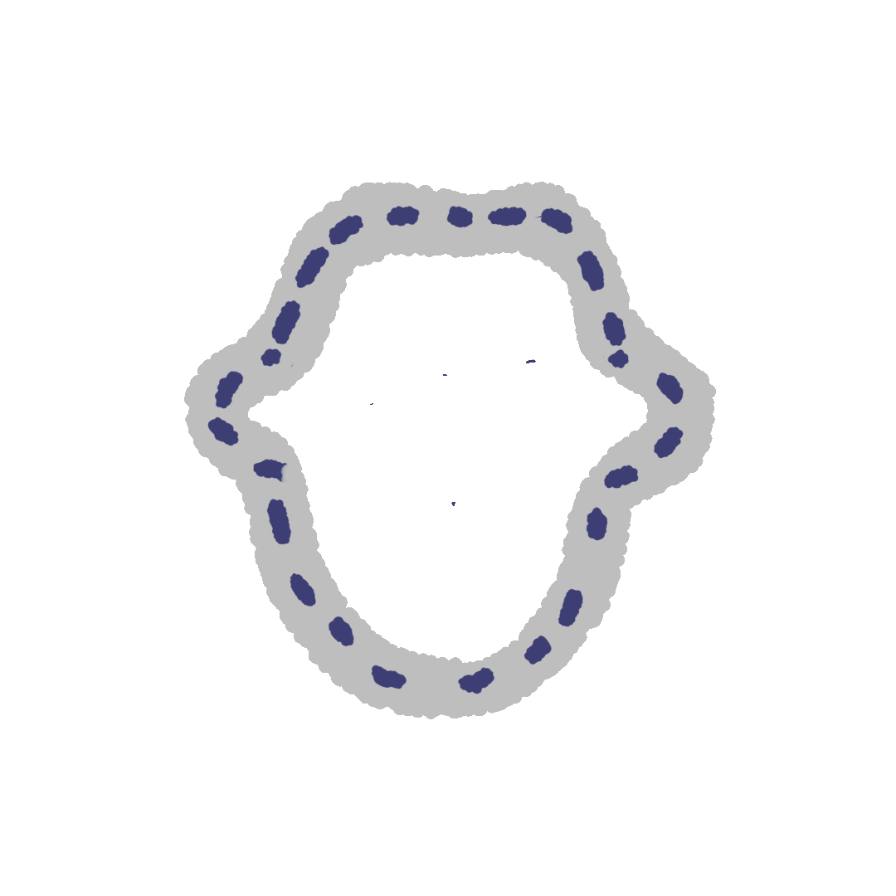

NEMOĆNO
Kako iskazati taj utisak što ga je proizveo dodir desetak pritešnjenih telesa na zadnjoj platformi autobusa S jednog dana oko podne u Ulici Lisabon? Kako izraziti utisak koji ostavlja na nas samo jedan letimičan pogled koji ste bacili na neku ličnost s neobično dugim vratom i sa šeširom na kome je traka zamenjena, bog će ga znati zašto, nekom vrstom uzice? Kako opisati utisak koji stvara u vama prepirka između jednog mirnog putnika, nepravedno napadnutog da gazi po nogama nekog smešnog tipa, i tog samo na izgled mirnog, no pomalo krvoločnog tipa koji je gore opisan. Kako prevesti utisak što ga izaziva povlačenje ovog poslednjeg što svoj bedni kukavičluk prikriva providnim izgovorom da on zapravo samo koristi mogućnost da sedne na slobodno sedište? I kako najzad formulisati utisak što ga proizvodi u vama ponovno pojavljivanje njegovog bedničanstva, nepuna. Dva sata kasnije, pred stanicom Sen Lazar, u društvu nekog elegantnog prijatelja koji mu govori o mogućnosti poboljšanja kaputskih problema?
